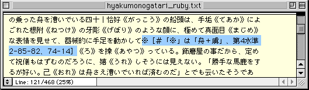

はじめに
新JIS漢字は私たちに、なにをもたらすのでしょう？
青空文庫の作業は具体的にどう変わり、どんな可能性が、ここから開けるのでしょう？
「コンピューターを使った読み書きの作法が、少し変わる。」
私たちを待ち受けているものは、ただそれだけの話なのでしょうか。
2000年1月、JIS漢字コードの新しい規格が定められました。
これまでパソコンやワープロでは、第1第2水準の漢字と仮名、記号、ラテン文字など、計6,879字を使うことができました。
新しい規格は、加えて、第3第4水準の漢字とこれまでになかった記号、アクセント符号付きのラテン文字など、4,344字を定めています。
コンピューターを使って日本語を読み書きする基盤を計11,223字に広げ、「あの字がない。この記号が使えない」といった不自由を、できるだけなくそうというのが制定の狙いです。
青空文庫で著作権の切れた作品を電子化しようとする際、私たちはしばしば旧JISにない文字に出くわしてきました。
使っている文字コードにない、こうした「外字」を表すために、これまでは「何へん＋何」といった注記を用いてきました。

●青空文庫が採用してきた、外字の注記形式。「舟へんに虜」が第1第2水準にないために、漢字のつくりを説明して代えている。
紙の本に盛られた文章を受け継ぐ上では、こうした措置が必要だろうと判断しましたが、「まどろっこしい」との思いはぬぐえませんでした。
ところが、新JISを使えれば、このややこしい注記と、ほとんどかかわらずにすむようになるのです。
外字がなくなれば、テキストはすっきりと作れます。
HTMLやエキスパンドブックなどのファイルを用意する場合にも、ない文字の形を画像で作って貼り込むような手間が省けます。
音声に変換する際には、注記が読まれるような不都合が避けられます。
プリントアウトしたり、オンデマンド印刷したときに注記が体裁を乱すこともなくなり、従来の本に見劣りしない、すっきりしたページが仕立てられるでしょう。
青空文庫のような活動は、もっと進めやすくなり、その成果も、さらに幅広く、より確かなものとして利用できるようになるはずです。
こうしたメリットを享受できるのは、一人、青空文庫だけではありません。
コンピューターを使って日本語を読み書きする人のすべてが、新JIS環境の恩恵に浴せます。
人の考えや表現に触れ、自分の思いをまとめて示す場としての、ネットワークされたコンピューターの果たす役割は、ますます大きくなるでしょう。
人に学び、人と比べ合わせながら自分を確かめ、育てる機会を、より幅広く、より容易にもてるようになるはずです。
そんな未来を、すばやく引き寄せてみてはどうでしょう？
・第1第2水準の漢字などを定めた規格の正式な名前は、「7ビット及び8ビットの2バイト情報交換用符号化漢字集合」（JIS X 0208）です。1978（昭和53）年1月1日に制定され、その後、三度の改訂を経て、1997（平成9）年1月20日改正の最新の規格に至っています。
・第3第4水準の漢字などを定めた規格の正式な名前は、「7ビット及び8ビットの2バイト情報交換用符号化拡張漢字集合」（JIS X 0213）です。2000（平成12）年1月20日制定のこの規格は、JIS X 0208と組み合わせて同時に運用するものです。
・このページはもっぱら、新JIS環境をどう利用していくかという観点からまとめます。青空文庫の外字を、第3第4水準を利用してへらしていこうという立場です。
その一歩手前で青空文庫は、電子化の過程で見つかった外字を、第3第4水準に組み入れてもらうよう、働きかけました。これに関しては、「文学作品に現れた外字」を参照してください。
戻る。
続きを読む。